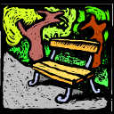

John Barker, our landscape architect, was kind enough to offer me a ride in his fuel-sipping biodiesel-fueled VW TDI to a meeting in front of the City of Seattle Design Commission. I felt ashamed pulling up to his office in the 16 year-old SUV I inherited from my father, which I seem to be unable to part with.
We met Pam Kliment, our Parks and Recreation Project Manager outside the meeting. The Commission wanted to hear from her more generally about the the Department of Neighborhoods matching fund park projects. She gave a short PowerPoint presentation, which seemed well received.
John got up and explained some of the key features of the park. I chimed in with a bit of what the neighbors wanted in the park. Surprisingly the commission didn’t have a lot of critical comments about the park. They were extremely supportive of John’s design. (more…)
Posted on November 16th 2006 by David Folweiler in Events,Meetings,Misc. | Comments Off on Design Commission Meeting – We were blessed! |
 Fellow Steering Committee member Brent Bottles and I met with Washington State Representative Mary Lou Dickerson today at the Phinney Ridge Starbucks. She offered that we should sit so we could see the view of Green Lake.
Fellow Steering Committee member Brent Bottles and I met with Washington State Representative Mary Lou Dickerson today at the Phinney Ridge Starbucks. She offered that we should sit so we could see the view of Green Lake.
We discussed the park project. She offered that she, along with the other 36th district Democrats, State Represtative and Chair of the Appropriations Committee Helen Sommers and State Senator Jeanne Kohl-Welles, would support the park in the state legislature.
She spoke of her own work on the Linden Orchards pocket park. She was apparently heavily involved in that project.
It was a great meeting.
Posted on November 16th 2006 by David Folweiler in Fundraising,Meetings | Comments Off on Mary Lou Dickerson |
Jody and Mark Stewart, Davidya Kasperzyk, Rebecca Carr, Gordon Waddell, Gabriella Möller, and I held a steering committee meeting tonight.
We discussed the new website (Yeah, Gordon!), fund raising ideas, grants, and lobbying the King County Council, the state legislature, and the governor’s office.
We also reviewed the current tri-fold brochure and discussed changes. Jody, a wedding invitation designer by profession, had lots of helpful feedback and offered to take on the design. Yeah, Jody! (more…)
Posted on November 15th 2006 by David Folweiler in Meetings | Comments Off on Steering Committee meeting 15 Nov 06 |
Molly made jam from plums in the park. It’s quite good.
Posted on November 15th 2006 by David Folweiler in Misc. | Comments Off on Still Life |

Ballard Corners Park Buttons
Uploaded to flickr by: machaggis.
David did a great job of producing buttons to promote the park. He will be distributing them at this weeks steering committee/community meeting so be sure to be there!
Posted on November 12th 2006 by gordon in Misc. | Comments Off on Have you *seen* our buttons? |
 Gordon sent the design to Elephants Gerald. John Ramm is working on them. They should be ready 20 Nov. Can’t wait to see them? Here’s the design. Imagine it on a brown shirt.
Gordon sent the design to Elephants Gerald. John Ramm is working on them. They should be ready 20 Nov. Can’t wait to see them? Here’s the design. Imagine it on a brown shirt.
Posted on November 11th 2006 by David Folweiler in Misc. | Comments Off on T-shirts |
Our website has undergone a slight change tonight, and has taken the “oh-so-modern” blog format. This change is to allow our steering committee to update the website with information as it happens, and allow you to receive updates without having to wait for mass emails.
You can see that David has already posted about many of his fundraising meetings this week.
There will still be semi-regular emails sent out if you have subscribed to Friends of Ballard Corners Park, but feel free to check this site for updates, or use our RSS feeds to receive posts as they occur. (What is RSS?).
Anyone can comment on any article on the website, and all steering committee members can consider posting articles – if you want an account then contact Gordon using Contact Us.
Finally a little history – David created version 1 of the website with this banner:

and then followed up with version 2 which had this logo:
.
I have created version 3 to implement the blog functionality: but David and the committee members will continue to provide most of the content and value of the website. We have kept the basic “look and feel” of the original website as designed by David.
Even Einstein parks it.
Posted on November 11th 2006 by gordon in Misc. | Comments Off on Welcome to revision 3 of our website |
I was informed of additional grant opportunities today. Check out Waterworks from King County. Up to $50,000 is available.
Seattle Public Ultilities (SPU) has a smaller grant – $1,000 – for improving water quality.
Posted on November 9th 2006 by David Folweiler in Fundraising | Comments Off on More Grant Opportunities |
I have requested that Governor Christine Gregoire consider funding Ballard Corners Park. Victor Moore, the Director of the State of Washington Office of Financial Management (OFM) is “working with Governor Gregoire to develop her 2007-09 capital budget recommendation to the Legislature.” he requested that we answer a series of questions about our project. Our response is here.
Posted on November 9th 2006 by David Folweiler in Fundraising | Comments Off on The Governor’s Office |
 We have great news! Washington State Senator Jeanne Kohl-Welles has arranged to have fellow Ways and Means Commitee and Vice Chair Capital Budget Chair Senator Karen Fraser meet with representatives of Ballard Corners Park on 20 Dec 06, 11:30-12:00. Sen. Kohl-Welles is turning out to be a great advocate for us; I couldn’t be happier with her efforts to help us.
We have great news! Washington State Senator Jeanne Kohl-Welles has arranged to have fellow Ways and Means Commitee and Vice Chair Capital Budget Chair Senator Karen Fraser meet with representatives of Ballard Corners Park on 20 Dec 06, 11:30-12:00. Sen. Kohl-Welles is turning out to be a great advocate for us; I couldn’t be happier with her efforts to help us.
Posted on November 9th 2006 by David Folweiler in Fundraising | Comments Off on Meeting with Senator Fraser 20 Dec 06 |

{kind=link}